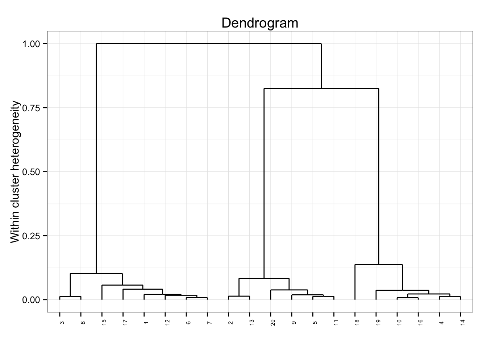
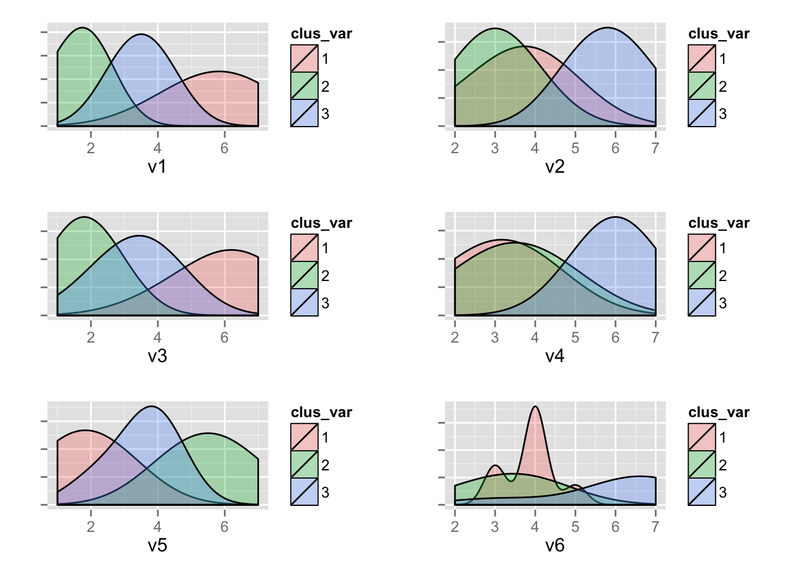

Programming with Radiant
Radiant’s goal is to provide access to the power of R for business analytics. Although Radiant’s web-interface can handle quite a few data and analysis tasks, at times you may prefer to write your own code. Radiant provides a bridge to programming in R(studio) by exporting the functions used for analysis. For example, you can run your analyses in Radiant and output the relevant function calls to an Rmarkdown document. Most pages in the app have an icon you can click (e.g., the book icon on the bottom left on the Base > Single mean page) to start working on your report. Press the Update button on the R > Report page to render the report to HTML. The full function manual is available at http://vnijs.github.io/radiant/radiant.pdf.
You can also use Rstudio to render and edit Rmarkdown documents generated in Radiant. When you install and load Radiant it exports functions that can be called from R-code and/or an Rmarkdown document.
If you close Radiant using Quit > Quit after launching it from R(studio) you can can paste the commands below into the command console to get the same output as in the browser interface.
result <- single_mean("diamonds","price")
summary(result)Single mean test
Data : diamonds
Variable : price
Null hyp.: the mean of price = 0
Alt. hyp.: the mean of price is not equal to 0
mean t.value p.value df 2.5% 97.5% sd n
3907 54.08 < .001 2999 3766 4049 3957 3000plot(result)
You can also call functions for visualization (see below) and access help from the console using ?visualize
visualize(dataset = "diamonds", viz_xvar = "carat", viz_yvar = "price",
viz_type = "scatter", viz_facet_row = "clarity", viz_color = "clarity")
As an example, you can render the single_mean.Rmd file into html (or pdf or word if you prefer) in Rstudio. Try the code in radiant_rcode.R for a more extensive example. Note that this feature is in development and will be expanded and changed over time. It is currently available for all tools listed in the Base and Regression menus.
Radiant is available on CRAN. To install the latest version with complete documentation for offline access, open R(studio) and copy-and-paste the commands below:
install.packages("radiant", repos = "http://vnijs.github.io/radiant_miniCRAN/")
library(radiant)This will load the library and the required packages. To see the index of functions currently available from the Radiant package using the help(package = "radiant") command
Lets start by comparing the mean of a variable to a (population) value using the built-in mtcars dataset. This functionality is in the Radiant menu Base > Single mean. The analysis is conducted in function single_mean. Calling the summary method on the result object will show tabular output. Calling plot on the same result will produce plots to help evaluate the hypothesis.
result <- single_mean("mtcars", "mpg", sm_comp_value = 20, sm_alternative = "greater")
summary(result)Single mean test
Data : mtcars
Variable : mpg
Null hyp.: the mean of mpg = 20
Alt. hyp.: the mean of mpg is > 20
mean t.value p.value df 2.5% 97.5% sd n
20.09 0.085 0.466 31 18.28 Inf 6.027 32plot(result, sm_plots = c("hist","simulate"))
To compare the mean price of diamonds across different levels of clarity we can call the compare_means function:
result <- compare_means("diamonds", "clarity", "price")
summary(result)Pairwise comparisons (no adjustment)
Data : diamonds
Variables: clarity, price
Samples : independent
mean n sd se ci
I1 4195 40 2520 398.4 805.8
SI2 5100 529 4407 191.6 376.4
SI1 3999 721 3813 142.0 278.8
VS2 3823 661 3917 152.4 299.2
VS1 3789 442 3881 184.6 362.8
VVS2 3338 284 3933 233.4 459.3
VVS1 2608 224 3201 213.9 421.5
IF 2412 99 3331 334.7 664.3
Alt. hyp. Null hyp. diff p.value
I1 not equal to SI2 I1 = SI2 -905.41 0.045 *
I1 not equal to SI1 I1 = SI1 196.20 0.645
I1 not equal to VS2 I1 = VS2 371.81 0.387
I1 not equal to VS1 I1 = VS1 405.59 0.36
I1 not equal to VVS2 I1 = VVS2 856.96 0.068 .
I1 not equal to VVS1 I1 = VVS1 1586.32 0.001 ***
I1 not equal to IF I1 = IF 1783.08 0.001 ***
SI2 not equal to SI1 SI2 = SI1 1101.61 < .001 ***
SI2 not equal to VS2 SI2 = VS2 1277.22 < .001 ***
SI2 not equal to VS1 SI2 = VS1 1311.01 < .001 ***
SI2 not equal to VVS2 SI2 = VVS2 1762.37 < .001 ***
SI2 not equal to VVS1 SI2 = VVS1 2491.73 < .001 ***
SI2 not equal to IF SI2 = IF 2688.49 < .001 ***
SI1 not equal to VS2 SI1 = VS2 175.61 0.399
SI1 not equal to VS1 SI1 = VS1 209.40 0.369
SI1 not equal to VVS2 SI1 = VVS2 660.76 0.016 *
SI1 not equal to VVS1 SI1 = VVS1 1390.12 < .001 ***
SI1 not equal to IF SI1 = IF 1586.88 < .001 ***
VS2 not equal to VS1 VS2 = VS1 33.79 0.888
VS2 not equal to VVS2 VS2 = VVS2 485.15 0.082 .
VS2 not equal to VVS1 VS2 = VVS1 1214.51 < .001 ***
VS2 not equal to IF VS2 = IF 1411.27 < .001 ***
VS1 not equal to VVS2 VS1 = VVS2 451.36 0.13
VS1 not equal to VVS1 VS1 = VVS1 1180.72 < .001 ***
VS1 not equal to IF VS1 = IF 1377.48 < .001 ***
VVS2 not equal to VVS1 VVS2 = VVS1 729.36 0.022 *
VVS2 not equal to IF VVS2 = IF 926.12 0.024 *
VVS1 not equal to IF VVS1 = IF 196.76 0.621
Signif. codes: 0 '***' 0.001 '**' 0.01 '*' 0.05 '.' 0.1 ' ' 1plot(result, cm_plots = c("bar","density"))
These datasets are available after loading the radiant library. We can also load data through Radiant’s web interface and then access the data from the console after closing the app. Start radiant using the command below and then click examples > Load examples in the Data > Manage tab. Then close the app using Quit > Quit.
# start radiant, load the example data, then Quit > Quit
radiant()We can now use the compare_means function to evaluate salary data for professors of different ranks using:
result <- compare_means("salary", "rank", "salary")
summary(result)Pairwise comparisons (no adjustment)
Data : salary
Variables: rank, salary
Samples : independent
mean n sd se ci
AsstProf 80776 67 8174 998.6 1994
AssocProf 93876 64 13832 1729.0 3455
Prof 126772 266 27719 1699.5 3346
Alt. hyp. Null hyp. diff p.value
AsstProf not equal to AssocProf AsstProf = AssocProf -13100 < .001 ***
AsstProf not equal to Prof AsstProf = Prof -45996 < .001 ***
AssocProf not equal to Prof AssocProf = Prof -32896 < .001 ***
Signif. codes: 0 '***' 0.001 '**' 0.01 '*' 0.05 '.' 0.1 ' ' 1plot(result)
We can also run regressions and get output that would require writting many lines of code to produce from scratch:
result <- regression("diamonds", "price", c("carat","clarity"))
summary(result, reg_sum_check = "confint")Linear regression (OLS)
Data : diamonds
Dependent variable : price
Independent variables: carat, clarity
coefficient std.error t.value p.value
(Intercept) -6781 205.0 -33.09 < .001 ***
carat 8438 51.1 165.12 < .001 ***
clarity > SI2 2791 201.4 13.86 < .001 ***
clarity > SI1 3609 200.5 18.00 < .001 ***
clarity > VS2 4250 201.6 21.08 < .001 ***
clarity > VS1 4462 204.6 21.81 < .001 ***
clarity > VVS2 5109 210.2 24.31 < .001 ***
clarity > VVS1 5028 214.3 23.47 < .001 ***
clarity > IF 5265 233.7 22.53 < .001 ***
Signif. codes: 0 '***' 0.001 '**' 0.01 '*' 0.05 '.' 0.1 ' ' 1
R-squared: 0.904, Adjusted R-squared: 0.904
F-statistic: 3530 df(9,2991), p.value < .001
Nr obs: 3000
coefficient 2.5% 97.5% +/-
(Intercept) -6781 -7183 -6379 401.9
carat 8438 8338 8538 100.2
clarity > SI2 2791 2396 3186 394.9
clarity > SI1 3609 3215 4002 393.1
clarity > VS2 4250 3855 4645 395.3
clarity > VS1 4462 4061 4863 401.2
clarity > VVS2 5109 4697 5522 412.2
clarity > VVS1 5028 4608 5448 420.1
clarity > IF 5265 4807 5723 458.1predict(result, reg_predict_cmd = "carat = 1:10")Predicted values for:
clarity carat Prediction 2.5% 97.5% +/-
SI1 1 5266 2860 7672 2406
SI1 2 13704 11295 16112 2409
SI1 3 22142 19726 24557 2416
SI1 4 30580 28153 33006 2427
SI1 5 39018 36576 41459 2442
SI1 6 47456 44995 49916 2461
SI1 7 55894 53410 58377 2484
SI1 8 64332 61821 66842 2510
SI1 9 72770 70229 75311 2541
SI1 10 81208 78633 83782 2575 clarity carat Prediction 2.5% 97.5% +/-
1 SI1 1 5266 2860 7672 2406
2 SI1 2 13704 11295 16112 2409
3 SI1 3 22142 19726 24557 2416
4 SI1 4 30580 28153 33006 2427
5 SI1 5 39018 36576 41459 2442
6 SI1 6 47456 44995 49916 2461
7 SI1 7 55894 53410 58377 2484
8 SI1 8 64332 61821 66842 2510
9 SI1 9 72770 70229 75311 2541
10 SI1 10 81208 78633 83782 2575plot(result, reg_plots = "coef")
plot(result, reg_plots = "dashboard")
As another example, imagine that you want to segment a sample of respondents based on their toothpaste attitudes. Below is the required code to produce results using functions from the Radiant package. For help on the commands and options for cluster analysis use ?hier_clus, ?plot.hier_clus, and ?kmeans_clus. See also the radiant function manual.
# set working directory to your Desktop
setwd("~/Desktop") # or setwd("~/Documents/Desktop")
# get the data from the link below and save it to your desktop
browseURL("https://github.com/vnijs/radiant/blob/master/inst/marketing/data/shopping.rda?raw=true")
# load the shopping dataset, if the file is not found make sure your working directory is set to Desktop
load("shopping.rda")
# load the radiant library
library(radiant)
# start with hierarchical clustering, view help
# run hierarchical cluster analysis on the shopping data, variables v1 through v6
result <- hier_clus("shopping", c("v1:v6"))
# summary - not much here - plots are more important
summary(result)Hierarchical cluster analysis
Data : shopping
Variables : v1:v6
Method : ward.D
Distance : sq.euclidian
Observations: 20 # check the help file on how to plot results from hierarchical cluster analysis
# default plots - looks like there is a big jump in the overall within-cluster
# heterogeneity in the step from 3 to 2 segments
plot(result)
# show the dendrogram with cutoff at 0
plot(result, hc_plots = "dendro", hc_cutoff = 0)
# plots created above suggest 3 clusters may be most appropriate
# use kmeans to create the clusters
# generate output and save clustermembership to the datafile
result <- kmeans_clus("shopping", km_vars = "v1:v6", km_nr_clus = 3)
summary(result)K-means cluster analysis
Data : shopping
Variables : v1:v6
Method : ward.D
Distance : sq.euclidian
Observations: 20
Generated : 3 clusters of sizes 8, 6, 6
Cluster means:
v1 v2 v3 v4 v5 v6
Cluster 1 5.750 3.625 6.000 3.125 1.875 3.875
Cluster 2 1.667 3.000 1.833 3.500 5.500 3.333
Cluster 3 3.500 5.833 3.333 6.000 3.500 6.000
Percentage of within cluster variance accounted for by each cluster:
Cluster 1 40.31%
Cluster 2 25.98%
Cluster 3 33.71%
Between cluster variance accounts for 73.93% of the
total variance in the data (higher is better).plot(result)
save_membership(result)Dataset shopping changed in R_GlobalEnv environment# was the data really changed?
getdata("shopping") %>% head id v1 v2 v3 v4 v5 v6 kclus3
1 1 6 4 7 3 2 3 1
2 2 2 3 1 4 5 4 2
3 3 7 2 6 4 1 3 1
4 4 4 6 4 5 3 6 3
5 5 1 3 2 2 6 4 2
6 6 6 4 6 3 3 4 1See if you can reproduce this output in the radiant web-interface. Start radiant using radiant().